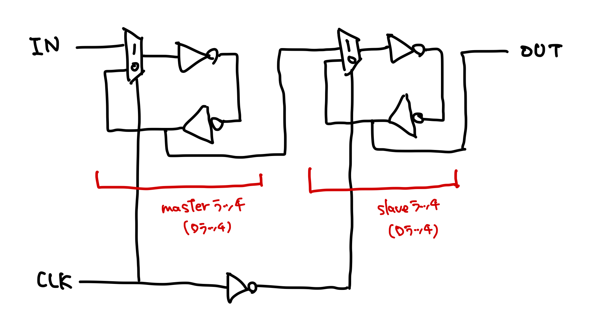

D-FF
1ビットの情報を記憶できる論理回路をフリップフロップという。 D-FFはクロックが立ち上がり（立ち下り）に同期する（立ち上がるか、あるいは立ち下る時に入力を記憶する）。 クロック遷移以外のタイミングで入力が変化しても、記憶は上書きされない。
マスタースレーブ型
内部構造

セレクタはトランスミッションゲート2つとNOTゲート1つによって構成できる。 また、クロックの位相を変える（master側のセレクタとslave側のセレクタに入力するクロックを逆にする）と、上の図では立ち下り時に同期するが、立ち上り時に同期するように変えることができる。 実際の設計では立ち上り同期型を使う機会の方が多い。
制約
D-FFが入力を記憶するために、2つの時間的制約がある。
- セットアップ時間 ()
- 正常に記憶するためにクロックの立ち上がり時刻より前に入力を確定させておかなければならないが、その最小時間
- ホールド時間（）
- クロック立ち上がり後に入力を変えてはならない最小時間
立ち上がりに同期するD-FFでは、出力が確定するのに入力から取り込まれた値がmasterラッチを通り、立ち上がり時にslave側セレクタによってセレクトされ、2つのNOTゲートを通過した後になる。 slave側セレクタが動作する = 立ち上がる前に、入力がmasterラッチを通過していなければいけない。したがって、そのmasterラッチの伝播遅延分だけセットアップ時間として確保しなければならない。マスタースレーブ型のD-FFのセットアップ時間は、少なくともクロック周期の半分になる。 また、NOTゲートの伝播遅延とセレクタ切り替わり時間の間に入力が変化すると、変化後の値がslaveに記憶されてしまうため、ホールド時間を確保しなければならない。
エッジトリガ型
SRラッチを使う。マスタースレーブ型と異なり、セットアップ時間がクロック半周よりも短くて良い。